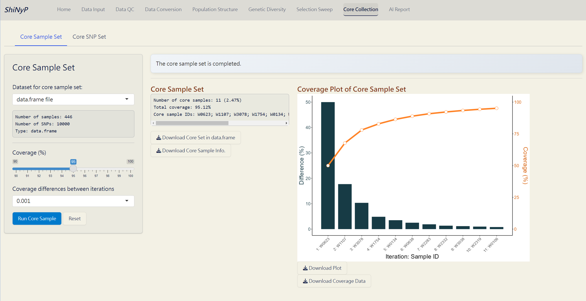
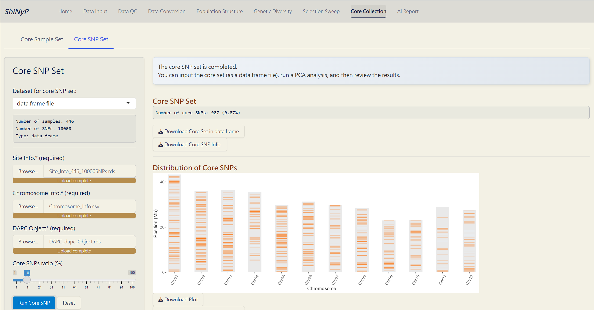

9 Core Collection
➡️ This section contains two subpages: Core Sample Set, and Core SNP Set, allowing you to capture the key samples and SNPs.

9.1 Core Sample Set
Establish a core collection that represents the genetic variation of the entire population. This approach is modified function from GenoCore (Jeong et al. 2017).
Steps:
Choose the minimum genetic coverage (%).
Choose the genetic coverage differences between iterations.
Click the Run Core Sample button to perform core collection.
Outputs:
Core Sample Coverage Data (CSV): A table listing the coverage (%) of each iteration and coverage differences between iterations.
Core Sample Set (RDS): A
data.frameof core samples and their genotypic information.Core Sample Info. (CSV): A table listing whether each sample is included in the core collection or not, and can be used as input data in the Population Structure/PCA subpage.
Coverage Plot of Core Sample Set (PDF): Visualizes the sample coverage by each iteration.

The Core Sample Set Complete!
9.2 Core SNP Set
Establish a core SNP collection that represents the genetic variation observed in the full dataset.
Required Datasets:
data.frame- Site Info. (RDS) of the current
data.frame, downloadable from Data Input or Data QC pages - Chromosome Info. (CSV): Reference genome information of the current study. For more details about this file, refer to Section 4.3 (SNP Density).
- DAPC Object (DAPC_dapc_Object.rds), downloadable from Population Structure/DAPC.
Steps:
Upload required datasts: Site Info. (RDS), Chromosome Info. (CSV), and DAPC Object (RDS).
Choose the maximum core SNPs ratio (%).
Click the Run Core SNP button to perform core collection.
Outputs:
Core SNP Set (RDS): A
data.frameof core SNPs and their genotypic information.Core SNP Info. (RDS): A table listing whether each SNP is included in the core collection or not.
Distribution of Core SNPs (PDF): An ideogram labeling the core SNPs.
Site Info. of Core SNPs (RDS): Core SNPs site information file.

The Core SNP Set Complete!